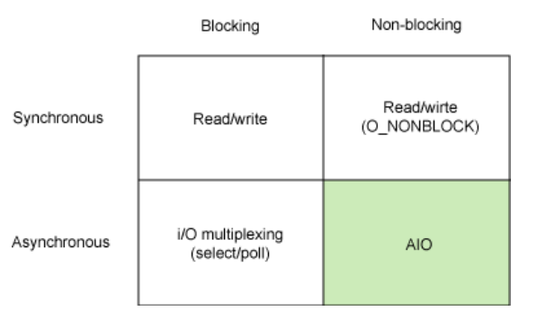
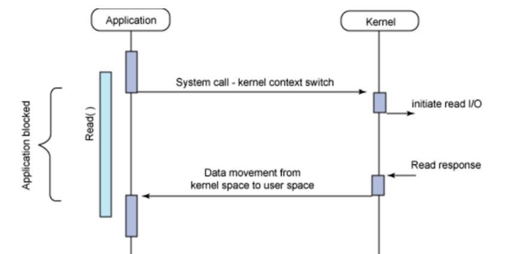
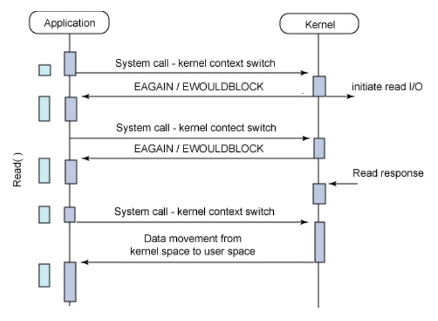
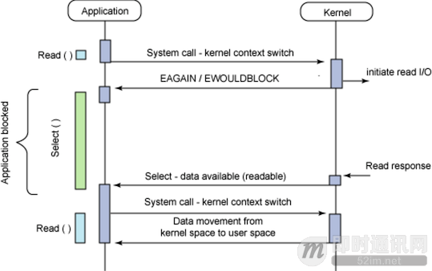
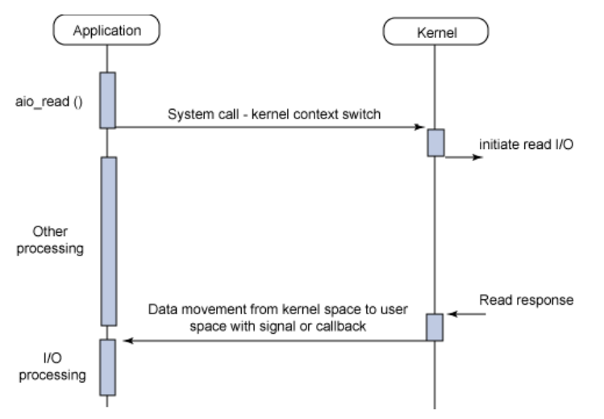

从JDK 7版本开始，Java新加入的文件和网络io特性称为nio2(new io 2, 因为jdk1.4中已经有过一个nio了)，包含了众多性能和功能上的改进，其中最重要的部分，就是对异步io的支持，称为Java AIO(asynchronous IO)。
因为AIO的实施需充分调用OS参与，IO需要操作系统支持、并发也同样需要操作系统的支持，所以性能方面不同操作系统差异会比较明显。所以本文也附带介绍了Linux 2.6及以后版本新增的AIO特性（因为这跟Java AIO是对应关系）。
Java AIO
基本原理
目前为止，Java共支持3种网络编程模型：BIO、NIO、AIO：
- Java BIO ： 同步并阻塞，服务器实现模式为一个连接一个线程，即客户端有连接请求时服务器端就需要启动一个线程进行处理，如果这个连接不做任何事情会造成不必要的线程开销，当然可以通过线程池机制改善。
- Java NIO ： 同步非阻塞，服务器实现模式为一个请求一个线程，即客户端发送的连接请求都会注册到多路复用器上，多路复用器轮询到连接有I/O请求时才启动一个线程进行处理。
- Java AIO(NIO.2) ： 异步非阻塞，服务器实现模式为一个有效请求一个线程，客户端的I/O请求都是由OS先完成了再通知服务器应用去启动线程进行处理。
BIO、NIO、AIO适用场景分析:
- BIO方式适用于连接数目比较小且固定的架构，这种方式对服务器资源要求比较高，并发局限于应用中，JDK1.4以前的唯一选择，但程序直观简单易理解。
- NIO方式适用于连接数目多且连接比较短（轻操作）的架构，比如聊天服务器，并发局限于应用中，编程比较复杂，JDK1.4开始支持。
- AIO方式使用于连接数目多且连接比较长（重操作）的架构，比如相册服务器，充分调用OS参与并发操作，编程比较复杂，JDK7开始支持。
AIO介绍
jdk在1.4版本的nio中提供了对非阻塞多路复用同步io模型的支持，但是在Windows上是基于较低效select/poll实现的。
jdk1.7中提供对aio的支持后，带来了两方面的好处：
- Windows上可以使用iocp了。
- 简化了网络变成模型。异步io相比较非阻塞多路复用模型更易理解，开发更为简单。
和多路复用的java nio相比较，可以发现，异步io是在数据读取或者写入调用已经完成的时候，再通知调用者，而非阻塞多路复用io则是在有数据就绪，可以读写的时候通知调用者，读写仍然是由调用者执行并且是阻塞的(这意味着如果要同时进行其他工作，要控制读写操作不能阻塞太长时间或者需要将其放去单独的io线程执行)。
JDK7中的java aio新增的类和接口主要有：
- AsynchronousServerSocketChannel ，对应于bio中的ServerSocket和nio中的ServerSocketChannel，用于server端的网络程序。
- AsynchronousSocketChannel，关于bio中的Socket和nio中的SocketChannel，用于client端的网络程序。
- CompletionHandler，回调接口，在socket进行accept/connect/read/write等操作时，可以传入一个CompletionHandler的实现，操作执行完毕后，会调用注册的CompletionHandler。
除了CompletionHandler这种回调方式，aio中还支持返回Future对象，使用Future来设定回调操作。
Linux AIO
Linux AIO 简介
Linux 异步 I/O 是 Linux 内核中提供的一个相当新的增强。它是 2.6 版本内核的一个标准特性，但是我们在 2.4 版本内核的补丁中也可以找到它。AIO 背后的基本思想是允许进程发起很多 I/O 操作，而不用阻塞或等待任何操作完成。稍后或在接收到 I/O 操作完成的通知时，进程就可以检索 I/O 操作的结果。
Linux 的 I/O 模型
在深入介绍 AIO API 之前，让我们先来探索一下 Linux 上可以使用的不同 I/O 模型。这并不是一个详尽的介绍，但是我们将试图介绍最常用的一些模型来解释它们与异步 I/O 之间的区别。图 1 给出了同步和异步模型，以及阻塞和非阻塞的模型。
基本 Linux I/O 模型的简单矩阵：

每个 I/O 模型都有自己的使用模式，它们对于特定的应用程序都有自己的优点。
同步阻塞 I/O：
如下图所示：传统的阻塞 I/O 模型，这也是目前应用程序中最为常用的一种模型。其行为非常容易理解，其用法对于典型的应用程序来说都非常有效。在调用 read 系统调用时，应用程序会阻塞并对内核进行上下文切换。然后会触发读操作，当响应返回时（从我们正在从中读取的设备中返回），数据就被移动到用户空间的缓冲区中。然后应用程序就会解除阻塞（read 调用返回）。

从应用程序的角度来说，read 调用会延续很长时间。实际上，在内核执行读操作和其他工作时，应用程序的确会被阻塞。
同步非阻塞 I/O：
同步阻塞 I/O 的一种效率稍低的变种是同步非阻塞 I/O。在这种模型中，设备是以非阻塞的形式打开的。这意味着 I/O 操作不会立即完成，read 操作可能会返回一个错误代码，说明这个命令不能立即满足（EAGAIN 或 EWOULDBLOCK），如下图所示。

非阻塞的实现是 I/O 命令可能并不会立即满足，需要应用程序调用许多次来等待操作完成。这可能效率不高，因为在很多情况下，当内核执行这个命令时，应用程序必须要进行忙碌等待，直到数据可用为止，或者试图执行其他工作。正如图 3 所示的一样，这个方法可以引入 I/O 操作的延时，因为数据在内核中变为可用到用户调用 read 返回数据之间存在一定的间隔，这会导致整体数据吞吐量的降低。
异步阻塞 I/O：
另外一个阻塞解决方案是带有阻塞通知的非阻塞 I/O。在这种模型中，配置的是非阻塞 I/O，然后使用阻塞 select 系统调用来确定一个 I/O 描述符何时有操作。使 select 调用非常有趣的是它可以用来为多个描述符提供通知，而不仅仅为一个描述符提供通知。对于每个提示符来说，我们可以请求这个描述符可以写数据、有读数据可用以及是否发生错误的通知。

select 调用的主要问题是它的效率不是非常高。尽管这是异步通知使用的一种方便模型，但是对于高性能的 I/O 操作来说不建议使用。
异步非阻塞 I/O（AIO）：
最后，异步非阻塞 I/O 模型是一种处理与 I/O 重叠进行的模型。读请求会立即返回，说明 read 请求已经成功发起了。在后台完成读操作时，应用程序然后会执行其他处理操作。当 read 的响应到达时，就会产生一个信号或执行一个基于线程的回调函数来完成这次 I/O 处理过程。

在一个进程中为了执行多个 I/O 请求而对计算操作和 I/O 处理进行重叠处理的能力利用了处理速度与 I/O 速度之间的差异。当一个或多个 I/O 请求挂起时，CPU 可以执行其他任务；或者更为常见的是，在发起其他 I/O 的同时对已经完成的 I/O 进行操作。
异步 I/O（AIO） 的动机
从前面 I/O 模型的分类中，我们可以看出 AIO 的动机。这种阻塞模型需要在 I/O 操作开始时阻塞应用程序。这意味着不可能同时重叠进行处理和 I/O 操作。同步非阻塞模型允许处理和 I/O 操作重叠进行，但是这需要应用程序根据重现的规则来检查 I/O 操作的状态。这样就剩下异步非阻塞 I/O 了，它允许处理和 I/O 操作重叠进行，包括 I/O 操作完成的通知。
除了需要阻塞之外，select 函数所提供的功能（异步阻塞 I/O）与 AIO 类似。不过，它是对通知事件进行阻塞，而不是对 I/O 调用进行阻塞。
总结和对比
使用异步 I/O（AIO）可以帮助我们构建 I/O 速度更快、效率更高的应用程序。如果我们的应用程序可以对处理和 I/O 操作重叠进行，那么 AIO 就可以帮助我们构建可以更高效地使用可用 CPU 资源的应用程序。
尽管这种 I/O 模型与在大部分 Linux 应用程序中使用的传统阻塞模式都不同，但是异步通知模型在概念上来说却非常简单，可以简化我们的设计。
| BIO | NIO | AIO | |
|---|---|---|---|
| IO 模型 | 同步阻塞 | 同步非阻塞（多路复用） | 异步非阻塞 |
| 编程难度 | 简单 | 复杂 | 复杂 |
| 可靠性 | 差 | 好 | 好 |
| 吞吐量 | 低 | 高 | 高 |
举例说明
1)同步阻塞：到理发店理发，就一直等理发师，直到轮到自己理发。
2)同步非阻塞：到理发店理发，发现前面有其它人理发，给理发师说下，先干其他事情，一会过来看是否轮到自己.
3)异步非阻塞：给理发师打电话，让理发师上门服务，自己干其它事情，理发师自己来家给你理发